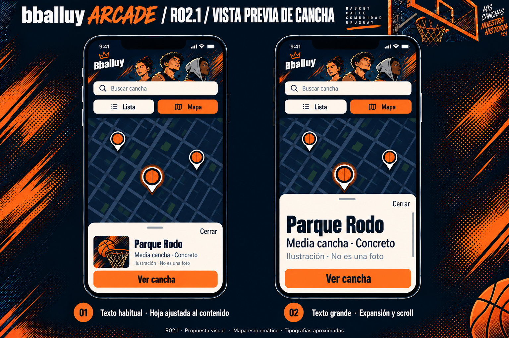
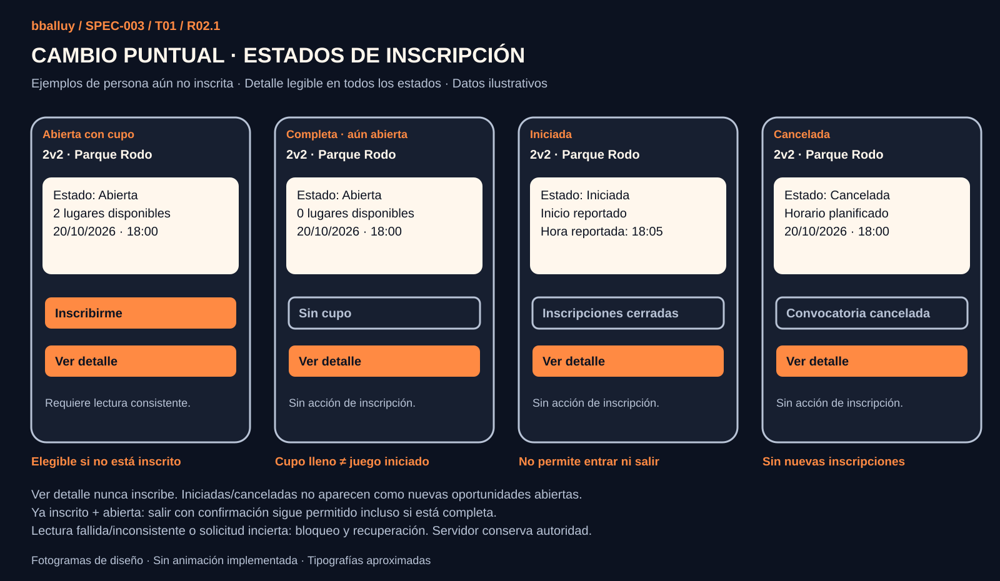
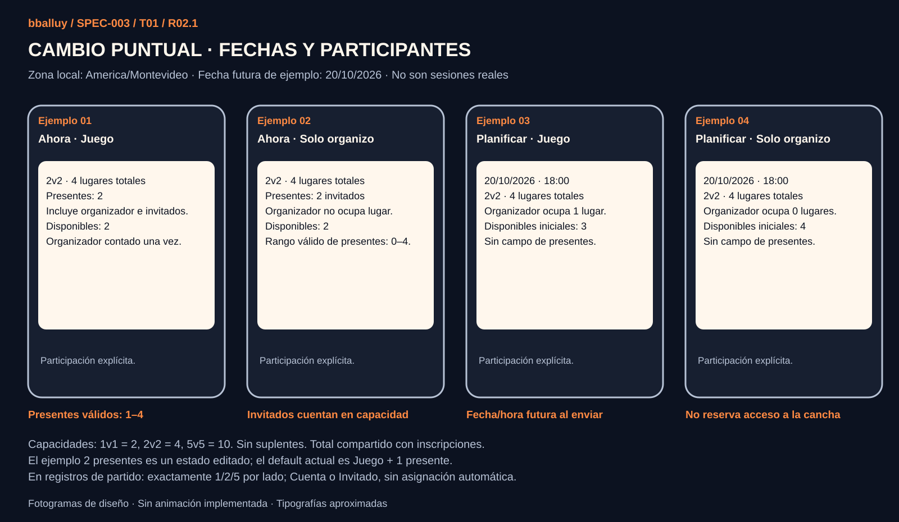
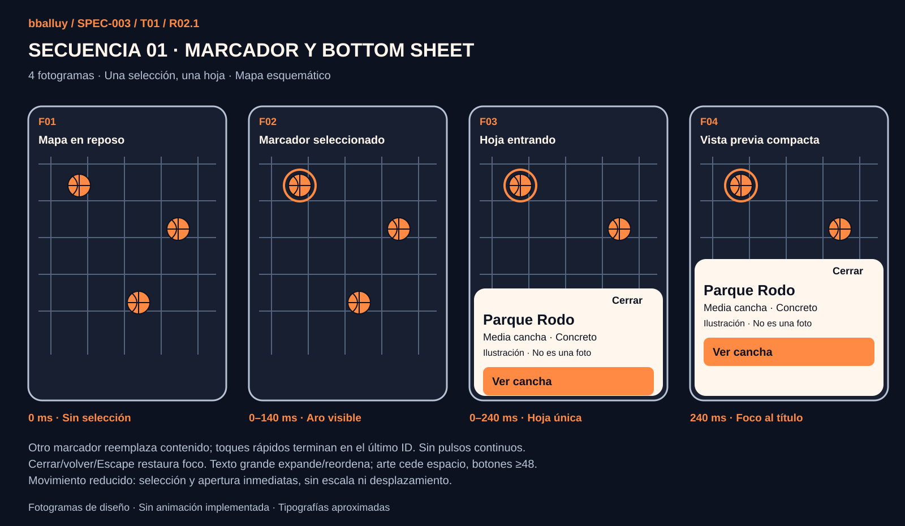
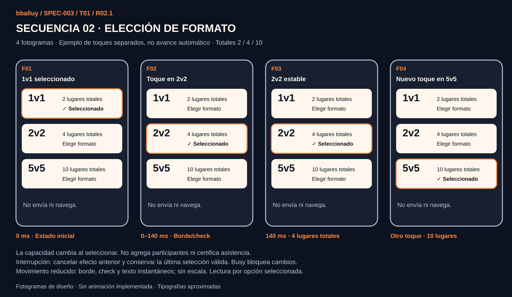
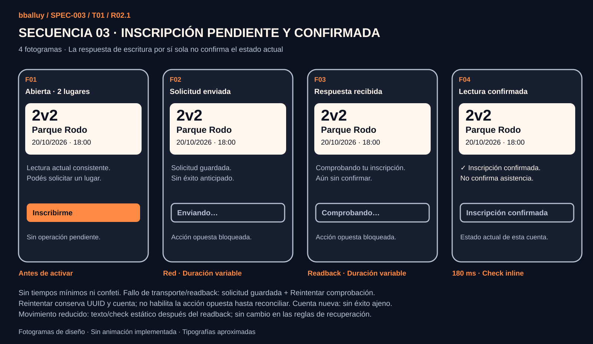

SPEC-003 / T01 / R02.1 / 13 OCT 2026
Cambios puntuales y nuevas secuencias
Dirección visual R02.1 y tres secuencias aprobadas. T01 completada en diseño, tras revisión de consistencia documental. Todo lo demás de R02 se conserva; esta presentación contiene únicamente los ajustes solicitados. Datos ilustrativos, sin actividad real.
Bottom Sheet compacto y texto grande

Altura ajustada al contenido, miniatura reducida y expansión/reflujo con scroll. Cerrar y Ver cancha siguen visibles; objetivos táctiles ≥48 y áreas seguras. El tamaño no tiene un límite fijo que corte texto.
Inscripción según el estado real

Ver detalle no inscribe. Una convocatoria abierta y completa permite salir con confirmación a quien ya está inscrito; una iniciada o cancelada no permite entrar ni salir. Fallos de lectura y operaciones inciertas mantienen el bloqueo correspondiente.
Fechas y participantes

20/10/2026 · 18:00, fecha futura respecto de esta revisión, zona Uruguay. Ejemplos de 2v2: cuatro lugares en total, sin duplicar organizador. Ahora incluye presentes e invitados; Planificar no agrega un campo de presentes. Los defaults existentes se conservan.
Secuencia 1 · Marcador y apertura

140 ms selección; 240 ms hoja. Último marcador gana y reemplaza la misma hoja. Movimiento reducido: inmediato, sin escala ni desplazamiento.
Secuencia 2 · Selección de formato

Toques separados, nunca ciclo automático. 140 ms borde/check; capacidad inmediata 2/4/10. No envía ni navega. Movimiento reducido: estado instantáneo.
Secuencia 3 · Inscripción y confirmación

La respuesta de escritura no basta: la confirmación aparece tras verificar el estado actual de esta cuenta. Duración de red variable, check 180 ms. Fallo conserva solicitud y recuperación; movimiento reducido usa texto/check estático.
Anotaciones de reglas, accesibilidad y límites · Generación de la corrección raster
Sin cambios funcionales. T01 completada exclusivamente en diseño. No hay implementación ni autorización para T02. Las pruebas nativas de accesibilidad siguen pendientes.